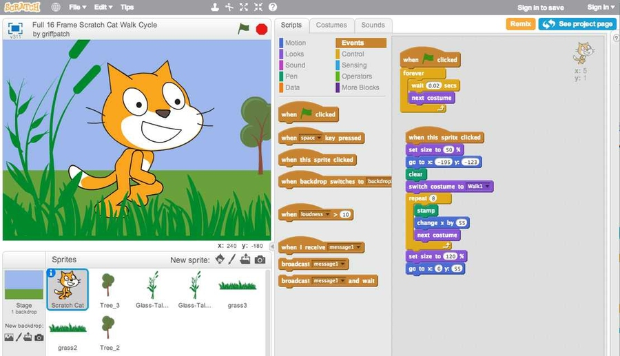
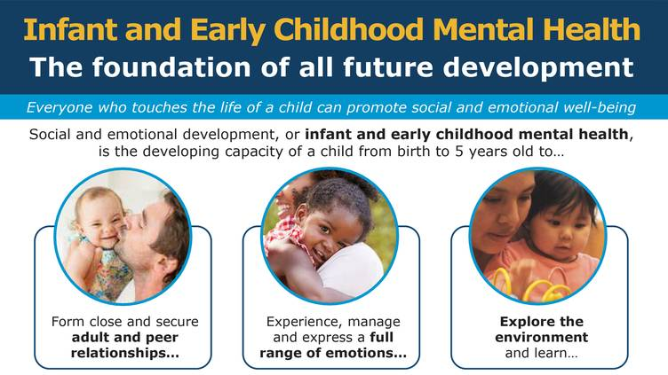

Learning What I Love
While attending Rowan University, I studied History and Elementary Education. I enjoyed most of my classes, but my favorite course in all my years at school was Educational Technology. It was the first time that I had seen technology incoorporated into the classroom and not just brought in because the administration said they had to. Growing up, the most advanced technology we had was a single SmartBoard shared between 30 classrooms. My memories with this technology involve upset teachers whose lessons didn't work out and movies. My only course work until my college program was very basic and typing efficiency, so after Ed Tech, I was determined to make sure my students were more informed about technology.
Private & Public School

After graduation, in 2014, I began working at a small private school teaching 3rd grade. At the end of my first year, the school began severe budget cuts and they needed to downsize the number of educators. As the newest added to the staff, I began looking for a new position. With the new year, I began working at a public school as a 4th grade English and Science teacher. While in this role, I was challenged to incoorporate more STEM education into my classroom, because of the newer state standards. While researching ways to do so, I learned about block coding utilizing Scratch. I took a weekend to play around and I fell in love. I couldn't put it down and I knew I needed to introduce it to my students. The very next week I created a coding unit where the students were to choose a story from our year, plan a design, code the program and develop a functioning game for the class. This unit was an immediate hit! Students were excited, teachers were curious and administration were impressed. For the years that followed in that district, I was not only the teacher with the awesome end of the year project, but during free period and after school STEM camp, my course was often top choice.
What began as challenge for me, quickly became a passion. Although my coding was limited to block coding, I wanted to learn more, but as a public school teacher my time was very limited. After several years, I began feeling like my room for growth was limiting and I did not see myself enjoying moving into administration. At that time, I choose to leave public education.
Social Work

Although I was exploring where I wanted to go as a career, I had the education and experience that led me into my next position. Because of my training in child development, I was hired for a new state initiative as an Early Childhood Specialist. For this role, I worked as a social worker helping families learn about their young children's development and different things that can impact a child. Although I enjoy working with families, I missed the part of my job where I explored new technologies and I pushed myself to practice coding.
Looking Forward
After leaving public education, I found myself with more time but less motivation. Practicing code and learning new things in that field, even made me sad because it brought back memories of good times and made me miss my old students. Finding LaunchCode was a great motivator and has made me not only learn different coding languages and uses, but has also made me think about what I want to do as a career. After completing our bootcamp, I would love to look in the field of Education Technology and be able to bring my love of technology back into the classroom. I would love to help other teachers incoorporate new programs and tools to help make their lives a little simpler, and coding lessons to help expose students to the rapidly developing world of technology.